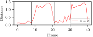
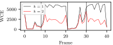

Source: Star Trek: The Next Generation, 5x28: Déjà Vu
* Separating a speech mixture into its sources
* Sources belong to the same domain, namely speech
* Separation is conducted blind (Unknown speaker count, gender, etc.)
* Separation is speaker independent
Framework
Training the RNN
* The matrix $VV^{\mkern-1.5mu\mathsf{T}} \in \mathbb{R}^{p \times p}$ is called the estimated affinity
matrix
* The training target is the ideal affinity matrix $YY^{\mkern-1.5mu\mathsf{T}} \in \mathbb{R}^{p \times
p}$
Pulls embeddings of the same class closer together
Pushes embeddings of the different classes apart
As the $p \times p$ matrix $VV^{\mkern-1.5mu\mathsf{T}}$ can be huge a low rank representation exists:
$J(Y, V) = || V^{\mkern-1.5mu\mathsf{T}} V ||^2_F - 2 || V^{\mkern-1.5mu\mathsf{T}} Y||^2_F + ||
Y^{\mkern-1.5mu\mathsf{T}} Y||^2_F$
Clustering
$k$-Means is used to cluster the embedding matrix $V \in \mathbb{R}^{p \times d}$.
The loss function of $k$-means adapted to our task is
$\gamma=\sum_{i=0}^{p} \sum_{j=0}^{k} z_{ij} ||v_i - c_j||^2 = ||V-ZM||_F^2$ where
$Z \in \mathbb{R}^{p \times k}$ with $z_{ij}=\begin{cases}
1 & \text{if $v_i$ is estimated to belong to speaker $k$} \\\\
0 & \text{otherwise}
\end{cases}$,
$v_i \in V$,
$c_j$ is the center of the cluster for speaker $j$ and
$M=(Y^{\mkern-1.5mu\mathsf{T}} Y)^{-1}Y^{\mkern-1.5mu\mathsf{T}} V$.
The training objective $J(Y, V)$ and the $k$-means objective $\gamma$ are small, if
$VV^{\mkern-1.5mu\mathsf{T}} \approx YY^{\mkern-1.5mu\mathsf{T}}$ which leads to $Z \approx Y$
Waveform Reconstruction
The matrix $Z \in \mathbb{R}^{p \times k}$ from the clustering step can be interpreted as binary mask:
$\mathrm{IBM}(t,m, j)=z_{t(\frac{M}{2}+1)+m,j}$
$\mathrm{IBM}(t,m, j)$ is 1 if speaker $j$ is active in the time-frequency bin $(t, m)$.
The spectrum of an individual speaker can be obtained by multiplying the spectrum of the mixture
with the $\mathrm{IBM}$:
$\tilde{S}_j(t,m)=\mathrm{IBM}(t,m,j) \cdot S(t,m)$
Finally, $\tilde{S}_j(t,m)$ can be inverted using the overlap-add approach which yields a discrete
speech signal $x_j(n)$.
Data and Metrics
**Three 30h training and 5h evaluation data sets are generated by mixing samples from:**
* TIMIT [54] (Texas Instruments + MIT) and WSJ0 [55] (Wall Street Journal), which contain
professional
audio
recordings
* TEDLIUM [56], which contains recordings of TED talks with varying quality.
**Multiple objective metrics where applied during the experiments:**
* ISR (Image to Spatial Distortion Ratio)
* SIR (Source to Interference Ratio)
* SAR (Source to Artifact Radio) and
* SDR (Source to Distortion Ratio) which combines the above three
The original paper on DC from Hershey et al. [1] acts as a baseline.
Hyperparameter
In order to optimize the network, multiple hyperparameters have been evaluated empirically:
Experiment Results A
Example inference on the WSJ0 data set with a male and a female speaker.
Experiment Results B
Example inference on the TIMIT data set with two female speakers.
Experiment Results C
Example inference on the noisy TEDLIUM data set with two male speakers.
Further Application
Another application is detecting concurrently speaking people.
**⇒ Speaker count detection using Order Selection**
There are mainly two ways:
1. Determine the distance between the centers
2. Calculate WCE (Within Cluster Error)
Order Selection

(a) The plot shows the Euclidean distance between the origin and the center for $k = 1$, as well as
the distance between the two clusters for $k = 2$.

(b) The WCE of an audio signal consisting of four segments over time.
Source: Speech Separation using Deep Clustering, p. 30
Visualisation of Clustering
Findings and Outlook
* Quality of separation suffers from noise in the data sets
* Unknown speakers do not affect the success to the same extent
**Data set is important, and hence more research is needed on preparing real-world
data**
Two methods for visualizing the embedding vectors were introduced:
* Illustration of linear dependence of embeddings
* Order Selection to draw a conclusion about the success of DC